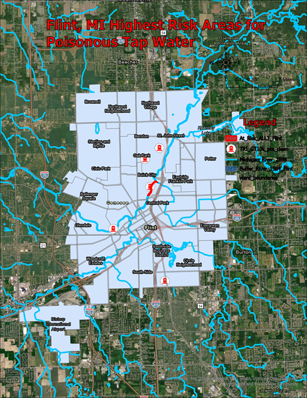
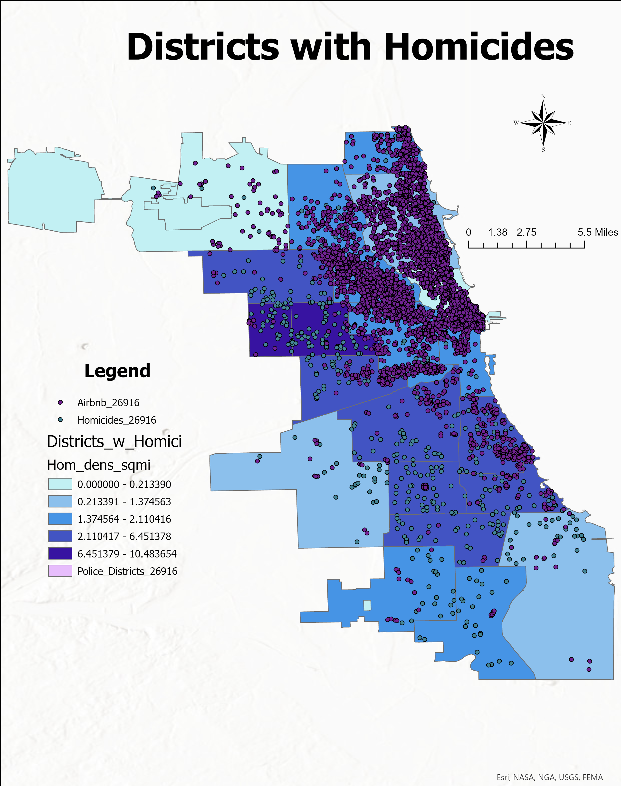

Overview
This course taught me how to use GIS as a full problem-solving framework rather than just a mapping tool. Each assignment pushed me to take a real-world issue, break it into measurable spatial components, and determine “where the location is just right,” in geography as always being central to the question. The Chimero reading reinforced this mindset by reminding us to consider not only how we build something, but why it matters — why spatial patterns appear, why the insights are meaningful, and why GIS is the appropriate lens to reveal them.
Over fifteen weeks, I learned how to combine datasets, construct buffers, run overlay analysis, perform joins, calculate densities, and design clear visualizations that communicate meaning rather than noise. More importantly, I learned how spatial relationships expose inequalities, environmental risks, and social patterns that raw tables or narrative descriptions cannot reveal. The work became less about making maps and more about using geographic evidence to understand the world.
This portfolio highlights three of my strongest projects from the semester. Each one focuses on a different problem — environmental health in Flint, environmental justice in Los Angeles, and crime/tourism dynamics in Chicago — but the workflow is the same: define the question, identify the spatial criteria, select the right GIS tools, and create visuals that tell a clear and compelling story. Together, these maps show both what I accomplished this semester and what I am now capable of doing within a GIS framework.
Map 1 – Flint, Michigan: At-Risk Water Contamination Zones
Identifying Where Lead Infrastructure, Industrial Pollution, and River Exposure Overlap
This map identifies the neighborhoods in Flint, Michigan that face the highest combined risk of contaminated drinking water. I focused on locations that met three simultaneous criteria: proximity to TRI facilities releasing over 10,000 tons of water pollutants, closeness to major rivers, and residential areas served by lead-based service lines. By buffering each risk factor and intersecting them, I isolated the exact zones where environmental hazards converge and residents are most vulnerable. The results revealed a concentrated hotspot near the Vietnam Veterans Memorial Park, where industrial pollution, river flow, and aging lead infrastructure overlap. This spatial analysis demonstrates how GIS can expose hidden environmental injustices that would be difficult to understand from raw data alone. The map ultimately shows where the threat is most severe and why these areas demand priority attention.
GIS Tools and Skills Used
- Buffer & Dissolve: Created 1,584-ft buffers for TRI facilities and rivers, and 1,056-ft buffers for lead service lines; dissolved overlaps for clean polygons.
- Joins & Attribute Query: Joined TRI pollutant data to identify facilities exceeding 10,000 tons of water pollution and selected only “Lead Only” service lines.
- Overlay Analysis: Intersected all three risk layers to locate the exact spatial overlap of hazards.
- Clip: Limited the final intersected layer to the City of Flint boundary for accurate municipal context.
- Calculate Geometry: Identified the highest-risk area (near Vietnam Veterans Memorial Park) from the final intersected polygons.
- Cartographic Design: Applied clear symbology, transparency, color contrast, a hazard “grave” icon, legend, scale bar, north arrow, and used the NAD_1983_HARN_StatePlane_Michigan_South_FIPS_2113_Feet_Intl projection.
Map 2 – Los Angeles: Schools, Landfills, and Income Inequality

Determining Whether Low-Income Communities Face Greater Exposure to Methane-Producing Landfills
This map analyzes whether lower-income neighborhoods in Los Angeles are more likely to have schools located near methane-producing landfills. Using census income data, landfill polygons, and school locations, I identified schools that fall within 0.5 km of any landfill and then isolated those inside census tracts in the bottom 50% of income per capita. The results show that many of these high-risk schools are concentrated in Supervisorial District 1, reinforcing long-standing environmental justice concerns. This pattern suggests that economically disadvantaged communities are disproportionately exposed to methane-related health risks compared to wealthier districts, even though rare outliers like Bel Air also appear in the data. Overall, the map demonstrates how GIS can reveal inequities that would otherwise remain hidden and provides a foundation for more just environmental policy.
GIS Tools and Skills Used
- Select by Location: Found all schools within 0.5 km of landfill polygons.
- Attribute Sorting & Selection: Ranked census tracts by income per capita and selected the bottom 50% to isolate low-income communities.
- Spatial Intersection: Linked selected schools to their underlying census tracts and identified clusters in Supervisorial District 1.
- Export & Layer Management: Saved the final selection as a clean layer (LowIncome_Tracts_near_Landfills) for mapping and analysis.
- Contextual Comparison: Identified Bel Air as the wealthiest tract with a nearby landfill, highlighting outliers in the overall pattern.
- Cartographic Design: Used clear symbology, labeling, and visual hierarchy to emphasize low-income tracts containing at-risk schools.
Map 3 – Chicago: Homicide Density and Airbnb Activity
Analyzing How Violent Crime Patterns Compare to Airbnb Density and Tourism Hotspot
This map examines the relationship between homicide density and tourism activity across Chicago's police districts. After projecting all layers to NAD 1983 / UTM Zone 16N, I summarized homicides per district and compared those patterns to Airbnb review density and average Airbnb price. The spatial distribution shows a clear divide: south and west districts experience the highest homicide densities, while downtown and northern districts have the strongest Airbnb activity and highest lodging prices. These results contradict the oversimplified narrative that Chicago's crime problem is uniform across the city and instead reveal a highly uneven risk landscape. The analysis demonstrates how GIS can transform raw crime and business data into nuanced insight for public communication, tourism planning, and policy decisions.
GIS Tools and Skills Used
- Projection Management: Reprojected crime, police district, and Airbnb layers to NAD 1983 / UTM Zone 16N for consistent analysis.
- Select by Attributes: Filtered the crime dataset to include only homicides before summarizing patterns.
- Spatial Join: Counted homicides per police district and aggregated Airbnb reviews and prices to the district level.
- Field Calculation: Added an area (sq mi) field and computed homicide and Airbnb review densities.
- Summary Statistics: Calculated total reviews and average Airbnb price by district to support comparison with homicide density.
- Thematic Mapping & Layout Design: Built graduated color choropleths for homicide and Airbnb density, created an average-price chart, and exported high-quality layouts with legends, north arrows, scale bars, and consistent fonts.